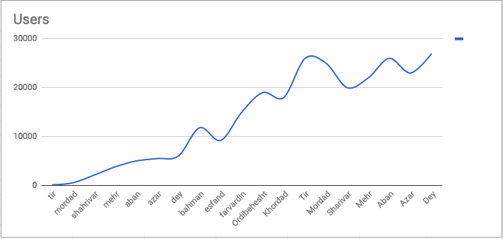

داستان پروازهاب

پروازهاب را اردیبهشت نود و شش شروع کردم. تازه از کار قبلی در اومده بودم. دلم میخواست یک چیزی درست کنم که از پایه خودم شروع کرده باشم. در زورق این ایده را داشتیم که تفاوت قیمت فروشندههای آنلاین با ما چقدره و یک فایل اکسل با قیمت حدودی برای این موضوع درست کرده بودیم. به دو تا موضوع فکر کردم. اول چقدر کار سختی ممکنه باشه ساختن چیزی مثل اسکایاسکنر؟ و دوم میشه ازش پول درآورد؟ جواب دومی بله بود و جواب اولی هم، اگر ساختن دوست داشته باشی، اصلا سختی وجود نداره.
اول بخش لذتدار ماجرا
رفتم سراغ روبی آن ریلز. روبی را در حد اسکریپت ساده بلد بودم فقط. دریایی از تکنولوژی و مفاهیم جلوم بود که بلد نبودم. روبی و روبی آن ریلز برای توسعه سیستم. چون نمیخواستم سراغ هاست ایرانی برم و در ضمن کارت اعتباری هم نداشتم لازم بود داکر و سی آی و سی دی بر پایه داکر هم بلد بشم که بتونم از سرویس ایرانی ابرکلاد استفاده کنم. لینوکس هم طبعا باید بهتر میفهمیدم. تست و توسعه برپایه تست (تی دی دی) هم در عمل پیاده نکرده بودم.یادگیری این چیزها و ساخت نسخه اولیه پروازهاب اواسط خرداد تموم شد. تو خونه کار میکردم و تا چند ماه بعد لازم نبود پولی دربیارم. پسانداز کافی بود. تیر برای نمایشگاه الکامپ ثبت نام کردم و نسخه کاملتر را در نمایشگاه به بازدیدکنندهها نشون دادم. عملا از ماه تیر بازدید سایت از صفر کنده شد و به مرور شروع به زیاد شدن کرد.
از اینجا به بعد تا پاییز تغییرات مختلف زیربنایی و روبنایی و رفع باگ را روی پروازهاب انجام دادم. بیشترین چیزی که وقت میگرفت مهندسی معکوس سایتهای فروش پرواز بود که بعدا توضیح میدم. نوشتن تست برای جاهایی که قبلا تنبلی کرده بودم هم کار وقتگیر بعدی بود. الان به گذشته نگاه میکنم مسیر درستی آمدم. تکنولوژی انتخاب کردم که ازش لذت میبرم و جامعهی سوپرفعالی داره. بیخود به اسکیل کردن فکر نکردم. اولین چیزی که نیاز کاربر را رفع میکرد پیاده کردم و تست کردم با آدمهای دور و بر. اول تست نوشتم بعد کد. به سی آی اهمیت دادم. بیشتر از روزی ۱۰ ساعت کار نکردم.
دوم بخش پولی
از روز اول فکرم این بود که تست کنم آیا میشه پول در آورد؟ اولین مسئله همینجا خودش را نشون داد: کاربرها در صورتی به پروازهاب میان که سایتهای متنوعی برای فروش را نمایش بده، از اون طرف سایتهای فروش پرواز هم اطلاعات قیمتی بلیط را در اختیار بیزینسی قرار میدهند که کاربر زیادی داشته باشه. یعنی قضیه مرغ و تخم مرغ. مشکل دیگهای هم بود. اغلب سایتهای فروش بلیط یا وب سرویس نداشتند و یا علاقهای نداشتند وبسرویس برای خارج مجموعه خودشون درست کنند. راه میانبر رفتم: از روی اپلیکیشن وبسایتها اند پوینت وب سرویسشون را پیدا کردم و با سعی و خطا طرز استفاده وب سرویسشون را کشف کردم. حالا میموند بخش پیچیده ماجرا، چجوری ازشون پول بگیرم؟مدل درآمدی در بیزینس پروازهاب دو شکل داره: یا بعد از خرید کاربر از سایت مقصد درصدی از خرید به پروازهاب پرداخت بشه و یا بدون توجه به خرید بابت هر کاربری که به سایت مقصد هدایت میشه مبلغ ثابتی دریافت بشه. شبیه تبلیغات گوگل. مدل اول برای من و سایت هدف پیچیده بود. چون باید سورس ورودی مشتری که خرید کرده را ذخیره میکردند و بعدا به من اعلام میکردند. بگذریم از حالات پیچیدهتری مثل کنسل کردن یا تغییر بلیط. من مدل دوم را انتخاب کردم. برای مثال ۱۰ نفر کاربر در روز به سایتتان برای خرید بلیط میفرستیم، در پایان ماه به ازای هر نفر ایکس تومان پرداخت کنید.
مشکل دوم را در آخر تابستان متوجه شدم: وبسایتهای فروش بلیط کاری به کیفیت کاربری که پروازهاب براشون ارسال میکرد نداشتند. پروازهاب هم سورس ورود کاربر بود مثل باقی جاها، مثلا تبلیغاتی که به ورزش ۳ میدادند. بنابراین مهم نبود که پروازهاب هر ماه ۵۰۰ کاربر باکیفیت به سایتشان ریدایرکت میکند یا ۲۵۰۰. چیزی که برای این سایتها اهمیت داشت تعداد بالای کاربر بود. که هنوز در پروازهاب وجود نداشت. در نهایت هیچ وقت این مشکل با سایتهای بزرگتر حل نشد، سایتهای کوچکتر ارزش کاربری که به سایتشون هدایت میشد را درک میکردند و به راحتی همکاری میکردند. با هر سایتی به روشی که خودشون ترجیح میدادند کار کردیم و در آمد در حد رفع هزینه به دست آمد.
سوم بخش انسانی
من در خونه مشغول کار بودم برای حداقل شش ماه. سختی این کار قاطی نکردن زمان کار و زمان بیکاری بود. میز کامپیوتر همیشه در دو قدمی آدم هست و نصف شب ممکنه بخوای بری سراغ حل فلان باگ که روی مغزت افتاده. سادهترین کار روشن کردن کامپیوتر و ادامه دادن کاره. ولی اشتباهه. دو تکنیک خیلی به کارم آمد. اول مشخص کردن ساعت کاری. مثلا بین ۷ تا ۱۲ شب کار تعطیله و به هیچ قیمتی نباید کار کرد. دوم ورزش کردن. ورزشی که ضربان قلب را بالا ببره و به طور مرتب تکرار بشه. در مورد دویدن اینجا مفصلتر نوشتم.هیچوقت تیمی برای پروازهاب تشکیل ندادم. برای الکامپ از حسام کمک گرفتم و اپ اندروید را هم آرش نوشت. ولی اصولا هیچ کار تیمی جدی انجام نشد. نیازی هم نبود.
چهارم بخش آماری
هیچ تبلیغاتی پولی نکردم. در ضمن هرجا صحبت از پروازهاب شد (چه جلسه همکاری با سایتهای پرواز و چه مصاحبه!) با خالیبندی به تیم اشاره کردم. چون شرکتها و آدمها به بیزینسی که تیم پشتش باشه اعتماد دارند و نه یک آدم. تک بودن در یک بیزینس نشانه نبوغ نیست، نشانه بلد نبودن تیم ساختن و اسکیل کردن و هزارتا مورد دیگه است.
دو تکان آماری اول آمار با پست جادی و پست دیجیاتو بود. تکان اصلی بعدی با سه روز برف و یخبندان تهران بود که سرچ پرواز را به شدت بالا برد. همینطور علی هم لطف کرد و در چنلبی تبلیغ پروازهاب را کرد. بغیر از اینها آمار به طور پیوسته و آرام رشد کرد. در طی این مدت به بیشتر از ۲۵۰ هزار نفر سرویس دادیم و بیشتر از ۲۵ هزار نفر ارزانترین بلیط را از طریق پروازهاب پیدا کردند.پنجم بخش آینده
از ابتدای امسال وقتی روی پروازهاب نگذاشتم. هرچند سرویس بالاست و همچنان به رشد ارگانیکش داره ادامه میده. شاید اگر روزی راضی نباشم از کیفیت خروجی، سرویس پروازهاب را تعطیل کنم. تابستان امسال کد پروازهاب را اپن سورس کردم. این اولین تجربهام با ریلز بود و خیلی بهتر از این میتونست باشه ولی درنهایت این کد کار میکنه و به نسبت تست کاور خوبی داره.ششم ساعت خوش
سایت علی بابا دومین جایی بود که برای همکاری تماس گرفتم. فکر میکردم خیلی خوشحال میشن که یک بیکاری مثل من قیمتهای سایتشون را در کنار باقی سایتها مقایسه کرده. البته که خوشحال نشدند و نه تنها ازم خواستند علیبابا را حذف کنم که حتی قوانین سایت را تغییر دادند که جمع آوری اطلاعات از سایت ما ممنوعه.سایت رسپینا تهدید کرد شکایت میکنند. قیمتهاشون خیلی هم بالاتر از بقیه نبود ولی براشون جالب نبود که قیمتشون مقایسه بشه.
تیم فنی سایت تراولچی متوجه شدند که پروازهاب از ای پی آی سایتشون داره استفاده میکنه. یک شرط به اپلیکیشن اضافه کردند که یک کلمهی خاص را در هدر رکوئست ارسال کنه. طبعا من هم چون درخواستهای اپلیکیشن را دنبال میکردم متوجه تغییر شدم و اون کلمه خاص را ارسال کردم. اونها دوباره کلمه را تغییر دادند و من هم کد را آپدیت کردم. بعد از چند روز موش و گربه بازی تماس گرفتند که لطفا سایت ما را جستجو نکنید! نتیجه اخلاقی اینکه همیشه از یک بستر امن رمزگذاری شده برای ارسال دیتا بین کلاینت اپلیکیشن و سرور استفاده کنید.
هفتهنامه شنبه برای عکس کنار مصاحبه از من درخواست کردند عکس تیممون را ارسال کنم! حسام زحمت کشید و در نقش عضو تیم کنار من ایستاد تا چهرهی استارتآپی موفقی نمایش بدیم!
هفتم چی یاد گرفتم
راهاندازی بیزینس بسیار سخته و به همون نسبت اگر موفق بشی احتمالا پول گندهتری هم گیرت میاد. برای من اما لذت ساخت محصول بیشتره. به نظرم دردسر بیزینس بزرگ ساختن به پول/لذتش نمیارزه.اپن سورس و به اشتراک گذاشتن و آموزش دادن بخش اساسی رشد مهندسی نرمافزاره. هرچی که فکر میکنم ممکنه به درد بقیه بخوره باید اپن سورس کنم. چیزی را خوب فهمیدم به چهار نفر دیگه منتقل کنم.
مشکل اول اغلب شرکتهایی که در طی این مدت دیدم خودشون بودند. یا دنبال دور باطل سرمایهگذار بگیر/تبلیغات کن/سرمایهگذار بگیر بودن و یا منم مدیر اصلی انقدر بزرگ بود که کاری از بقیه برنمیومد. با بودجه بسیار کمتر و با تعداد نفر کمتر شرکت خوشحالتر و بهینهتری میتونستند داشته باشند. حیف که نمیفهمند.